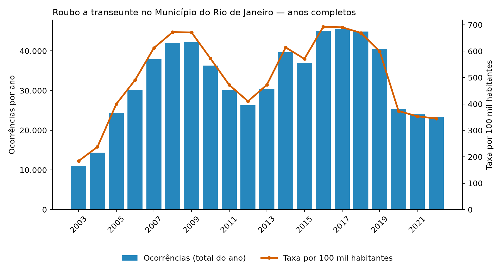
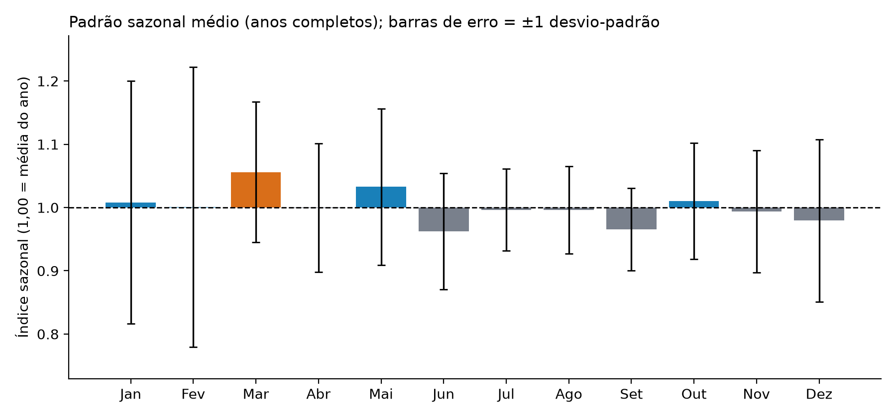

Resumo
O roubo a transeunte afeta diretamente a circulação das pessoas pela cidade, e acompanhar sua evolução ajuda a avaliar a segurança nos espaços públicos. Este estudo analisa a série mensal de ocorrências no Município do Rio de Janeiro, de janeiro de 2003 a outubro de 2023, publicada como dado aberto no portal Data.Rio. Construí um pipeline reprodutível em Python (pandas, NumPy, matplotlib e Plotly) que lê a tabela original, padroniza tipos e formatos, confere os totais e as taxas publicados e calcula medidas derivadas: variação anual, índice sazonal e comparação com um período-base. Nos anos completos, o total anual passou de 11.064 em 2003 para 23.369 em 2022, com máximo de 45.518 em 2017. O índice sazonal foi mais alto em março (1,06) e mais baixo em junho (0,96). Esse padrão sazonal é fraco diante da variação entre os anos. Em 2020, o volume mensal médio correspondeu a 57% da mediana mensal de 2017–2019 e, em 2022, a 52%. Como os dados são agregados para o município e vêm de registros de ocorrência, os resultados descrevem padrões temporais e não permitem atribuir causas. Código, dados processados e dicionário de variáveis estão abertos, conforme os princípios FAIR, para que qualquer pessoa possa auditar e ampliar a análise.
Palavras-chave: roubo a transeunte; segurança pública; Município do Rio de Janeiro; séries temporais; sazonalidade; dados abertos.
1. Introdução
Roubo a transeunte é a subtração de bens de uma pessoa a pé, mediante violência ou grave ameaça. Junto com o roubo de aparelho celular e o roubo em coletivo, compõe os chamados roubos de rua, indicadores acompanhados pelo Instituto de Segurança Pública do Estado do Rio de Janeiro (ISP-RJ, [s.d.]). Por acontecer no espaço público e no trajeto cotidiano, esse crime pesa na decisão de quando e por onde as pessoas circulam, e entender seu comportamento no tempo ajuda a orientar o debate sobre segurança urbana.
O portal Data.Rio publica a Tabela 2296, com dados do ISP e tabulação do Instituto Pereira Passos (IPP): ocorrências por mês, total anual, diferença em relação ao ano anterior (absoluta e percentual), população e taxa por cem mil habitantes (DATA.RIO, 2023). Este trabalho transforma essa tabela em uma série analisável e reprodutível, e responde a três perguntas de pesquisa:
- RQ1. Como evoluíram o total anual e a taxa por 100 mil habitantes de roubo a transeunte no município desde 2003, e em que anos ficaram o máximo e o mínimo?
- RQ2. Existe um padrão sazonal estável ao longo do ano? Quais meses concentram mais e menos ocorrências?
- RQ3. Como os anos de pandemia (2020 e 2021) e o ano seguinte se comparam com o patamar de 2017–2019?
2. Metodologia e Pipeline de Dados
2.1 Fonte e granularidade
A fonte primária é a Tabela 2296 do Data.Rio (dados do Instituto de Segurança Pública, ISP; tabulação do IPP), que cobre janeiro de 2003 a outubro de 2023 para o município inteiro, em arquivo Excel (.xls). A unidade observada é o número de ocorrências registradas por mês (granularidade mensal, agregação municipal). Os dados originais ficam em data/raw/ e nunca são alterados; 250 valores mensais passam pelo pipeline.
2.2 Tratamento dos dados
- Leitura. Tudo é lido como texto, para que nenhuma conversão aconteça sem controle. O código lê o Excel (ou CSV, tentando várias codificações), localiza a linha de cabeçalho pelos nomes dos meses e reconhece as colunas anuais pelo rótulo, ignorando os dígitos de nota de rodapé colados aos títulos (como “Total1”).
- Tipos. Números em formato brasileiro (
1.234,5) são convertidos para ponto flutuante; os marcadores da fonte para dado indisponível (...) ou não aplicável (..), traços e células vazias viram valor ausente. - Valores ausentes. Meses sem dado não são imputados: ficam fora da tabela mensal. Um ano com menos de 12 meses é marcado como parcial e excluído das comparações anuais.
- Estrutura. A tabela larga (ano × mês) vira formato longo (uma linha por mês), com a data real do primeiro dia do mês.
- Validação. O total e a taxa publicados na fonte são recalculados a partir dos meses e da população; divergências são registradas em
data/processed/qa_report.json, sem corrigir nada em silêncio. - Métricas derivadas. Variação anual (%), taxa por 100 mil habitantes, índice sazonal, razão em relação ao período-base e meses atípicos.
2.3 Métricas
O índice sazonal divide cada mês pela média mensal do próprio ano e tira a média por mês nos anos completos; 1,00 significa um mês na média do ano. Os meses atípicos são os que ficam fora da regra de Tukey (1,5 × amplitude interquartil) aplicada ao log da razão entre o valor e a mediana móvel centrada de 13 meses (TUKEY, 1977). A comparação de pandemia usa a razão entre cada mês de 2020–2022 e a mediana do mesmo mês em 2017–2019; com apenas três anos na base, a mediana evita que um único mês atípico distorça o resultado.
2.4 Trechos do pipeline
def to_number(valor) -> float:
"""Converte texto em número aceitando formatos brasileiros.
"1.234" -> 1234 | "1.234,5" -> 1234.5 | "12,5" -> 12.5 | "-" -> NaN
"""
if valor is None:
return np.nan
if isinstance(valor, (int, float, np.number)):
return float(valor)
s = str(valor).replace("\u00a0", " ").replace("\u2212", "-").strip()
s = re.sub(r"[*†‡]+$", "", s.replace(" ", "")).replace("%", "")
if s.lower() in _NULOS:
return np.nan
if "," in s and "." in s:
s = s.replace(".", "").replace(",", ".")
elif "," in s:
s = s.replace(",", ".")
elif _MILHAR.match(s):
s = s.replace(".", "")
try:
return float(s)
except ValueError:
return np.nan
def para_formato_longo(largo: pd.DataFrame) -> pd.DataFrame:
"""Largo (ano x 12 meses) -> longo (uma linha por ano-mês com valor)."""
longo = largo.melt(id_vars="ano", value_vars=list(range(1, 13)),
var_name="mes", value_name="ocorrencias")
longo["mes"] = longo["mes"].astype(int)
longo = longo.dropna(subset=["ocorrencias"]).sort_values(["ano", "mes"])
longo["data"] = pd.to_datetime({"year": longo["ano"], "month": longo["mes"], "day": 1})
n_meses = longo.groupby("ano")["mes"].transform("count")
longo["ano_parcial"] = n_meses < 12
longo["ocorrencias"] = longo["ocorrencias"].astype("int64")
return longo[["data", "ano", "mes", "ocorrencias", "ano_parcial"]].reset_index(drop=True)
def indice_sazonal(mensal: pd.DataFrame) -> pd.DataFrame:
"""Índice sazonal: valor do mês / média mensal do próprio ano (anos completos).
1,00 = mês na média do ano. Normalizar por ano remove o efeito do nível
(que muda muito entre 2003 e hoje) e deixa só o padrão dentro do ano.
"""
c = mensal[~mensal["ano_parcial"]].copy()
c["indice"] = c["ocorrencias"] / c.groupby("ano")["ocorrencias"].transform("mean")
c["acima"] = c["indice"] > 1
return (c.groupby("mes")
.agg(indice_medio=("indice", "mean"), desvio=("indice", "std"),
minimo=("indice", "min"), maximo=("indice", "max"),
anos_acima_da_media=("acima", "mean"))
.reset_index())3. Resultados e Discussão
3.1 RQ1 — Evolução anual
Considerando apenas anos completos, o total anual passou de 11.064 ocorrências em 2003 para 23.369 em 2022 (alta de 111,2%). O valor máximo foi registrado em 2017 (45.518) e o mínimo em 2003 (11.064), no início da série; depois do pico, o menor total foi o de 2022 (23.369). Em relação ao pico, o último ano completo está 48,7% abaixo.
A série não é monótona: há ondas de alta e queda, com máximos locais em 2009 (42.209), 2014 (39.686), 2017 (45.518).
Dentre as variações anuais, 9 foram quedas e 10 foram altas; a maior alta ocorreu em 2005 (69,5%) e a maior queda em 2020 (-37,3%). O coeficiente de variação do total anual é de 31,2%.
Uma regressão linear sobre o total anual tem inclinação de 534 ocorrências por ano e R² de 0,10: uma reta descreve mal a série, o que sugere mudanças de regime ao longo do período.
Ajustando pelo tamanho da população, a taxa por 100 mil habitantes foi de 184,0 em 2003 para 345,0 em 2022, com máximo de 692,6 em 2016. A população da série cresceu 12,7% no período; por isso a taxa e o total absoluto contam histórias diferentes quando a população muda. A correlação de Spearman entre ano e taxa é 0,12, o que mede a direção monotônica geral, e não a existência de picos e vales intermediários.
| Ano | Ocorrências | Variação anual | População | Taxa por 100 mil hab. |
|---|---|---|---|---|
| 2003 | 11.064 | — | 6.012.069 | 184,0 |
| 2004 | 14.390 | 30,1% | 6.057.933 | 237,5 |
| 2005 | 24.393 | 69,5% | 6.104.147 | 399,6 |
| 2006 | 30.194 | 23,8% | 6.150.714 | 490,9 |
| 2007 | 37.939 | 25,7% | 6.197.637 | 612,2 |
| 2008 | 41.984 | 10,7% | 6.244.917 | 672,3 |
| 2009 | 42.209 | 0,5% | 6.291.020 | 670,9 |
| 2010 | 36.288 | -14,0% | 6.336.534 | 572,7 |
| 2011 | 30.083 | -17,1% | 6.370.271 | 472,2 |
| 2012 | 26.288 | -12,6% | 6.406.820 | 410,3 |
| 2013 | 30.412 | 15,7% | 6.439.828 | 472,2 |
| 2014 | 39.686 | 30,5% | 6.463.250 | 614,0 |
| 2015 | 37.014 | -6,7% | 6.485.889 | 570,7 |
| 2016 | 45.029 | 21,7% | 6.501.393 | 692,6 |
| 2017 | 45.518 | 1,1% | 6.591.928 | 690,5 |
| 2018 | 44.903 | -1,4% | 6.709.314 | 669,3 |
| 2019 | 40.456 | -9,9% | 6.749.649 | 599,4 |
| 2020 | 25.356 | -37,3% | 6.789.290 | 373,5 |
| 2021 | 24.004 | -5,3% | 6.794.785 | 353,3 |
| 2022 | 23.369 | -2,6% | 6.772.682 | 345,0 |
| 2023 (jan–out) | 15.055 | — | — | — |

3.2 RQ2 — Sazonalidade
O índice sazonal médio é máximo em março (1,06) e mínimo em junho (0,96), uma diferença de 10% entre o mês mais e o menos intenso: sazonalidade modesta. Em 65% dos 20 anos completos, março ficou acima da média do próprio ano, o que indica o quanto o padrão se repete de um ano para outro.
O desvio-padrão típico do índice (mediana entre os meses: 0,10) é maior que o maior afastamento do índice médio em relação a 1,00 (0,06). As barras de erro da Figura 2 se sobrepõem: a diferença entre os meses é pequena diante da variação de um ano para outro, e não há evidência de um calendário sazonal forte nesta série.
Restringindo aos cinco anos completos mais recentes, o pico fica em janeiro e o vale em junho, diferente do padrão da série inteira, o que reforça que o padrão sazonal é instável.

Uma ressalva de método: o índice usa contagens brutas, sem ajuste pelo número de dias do mês. Fevereiro tem 28 ou 29 dias, cerca de 7% a menos que um mês de 30 dias, então parte de um índice baixo em fevereiro pode ser só calendário.
3.3 RQ3 — Pandemia
Para cada mês, comparamos o valor de 2020, 2021 e 2022 com a mediana do mesmo mês em 2017–2019. Em 2020, a média mensal ficou 43,2% abaixo da base; a menor razão foi em maio (34% da base). Em 2021, a média mensal ficou 46,2% abaixo da base; a menor razão foi em junho (49% da base). Em 2022, a média mensal ficou 47,5% abaixo da base; a menor razão foi em fevereiro (47% da base). A queda não começou com a pandemia: em janeiro e fevereiro de 2020, antes das medidas de isolamento, o volume já estava em 85% da base, e o total de 2019 já havia caído 9,9% em relação a 2018.
3.4 Dados parciais e meses atípicos
No acumulado de janeiro a outubro, 2023 soma 15.055 ocorrências, queda de 23,5% frente a 2022 (19.678). O maior acumulado para esse recorte foi o de 2017 (38.463).
O critério de Tukey sinalizou 9 meses como atípicos em relação à mediana móvel de 13 meses. Os três maiores desvios: fevereiro de 2017 (35% da mediana móvel); maio de 2020 (64% da mediana móvel); abril de 2020 (68% da mediana móvel).
3.5 Discussão
O dado mede registros de ocorrência, e não o crime em si. Mudanças na disposição de registrar, no acesso às delegacias ou nos canais de registro alteram a série sem que o número real de roubos mude. A própria fonte adverte que a classificação do crime feita pela Polícia Civil é provisória e pode ser alterada depois. Por isso, comparações entre extremos da série pedem cautela.
A série tem saltos grandes: a maior alta anual foi a de 2005 (69,5%) e a maior queda a de 2020 (37,3%). Variações dessa magnitude podem refletir mudanças reais, mas também alterações na forma de registrar ou classificar os crimes; este estudo não investiga essas causas.
Fevereiro de 2017 (1.419 ocorrências) ficou em 35% da mediana móvel dos meses vizinhos. Um desvio isolado desse tamanho pode refletir falha ou atraso de registro ou de consolidação, mas não temos como confirmar. Mantivemos o valor, sem corrigi-lo, e usamos a mediana (e não a média) como base da comparação da pandemia, justamente para que um mês assim não distorça o resultado.
Total e taxa respondem a perguntas diferentes: o total mede o volume que o sistema de segurança precisa tratar, e a taxa mede o risco médio por habitante. Quando a população cresce, o mesmo total implica taxa menor, e é a taxa que permite comparar anos distantes.
Em 2022, o volume ainda estava 48% abaixo da base de 2017–2019, e o acumulado de 2023 segue baixo. Ou seja, a queda não foi revertida quando as restrições acabaram, e a pandemia, sozinha, não explica o nível atual. Como parte da queda é anterior a 2020, outras explicações são plausíveis: mudanças em políticas de segurança, nos hábitos de circulação e de pagamento, na migração para outros tipos de crime e na forma de registro. São hipóteses; este estudo não as testa.
4. Conclusão
RQ1. O total anual não seguiu uma tendência única: foi de 11.064 em 2003 para 23.369 em 2022, passando por máximo em 2017 (45.518) e por ondas de alta e queda; o último ano completo está 48,7% abaixo do pico. RQ2. A sazonalidade é fraca e instável: o índice vai de 0,96 em junho a 1,06 em março, dentro da variação entre anos. RQ3. Em 2020, o volume mensal médio foi 57% da mediana de 2017–2019 e seguiu baixo em 2021 (54%) e 2022 (52%). A queda já aparecia antes de março de 2020, então a pandemia não a explica sozinha.
Limitações. (i) A série é municipal e agregada: não mostra diferenças entre bairros ou áreas de policiamento. (ii) Os valores são registros de ocorrência e sofrem de subnotificação. (iii) A contagem mensal não é ajustada pelo número de dias. (iv) O último ano é parcial e não entra nas comparações anuais. (v) A população é uma projeção do ISP referente a dezembro ou ao último mês disponível do ano (julho, em 2022), conforme a nota da fonte; não auditamos essa estimativa. (vi) Não há inferência causal.
Trabalhos futuros. Decompor a série com métodos como STL ou ajustar modelos ARIMA; testar o efeito de eventos específicos por análise de intervenção; cruzar com dados de mobilidade; repetir a análise por área de segurança pública; e comparar com os demais roubos de rua (celular e coletivo).
5. Disponibilidade dos Dados e Declaração FAIR
Este trabalho segue os princípios FAIR (WILKINSON et al., 2016). Repositório: https://github.com/Math7Braga/roubo-transeunte-rio.
| Princípio | Como é atendido |
|---|---|
| Findable | README.md com resumo, palavras-chave e link da fonte; autoria, disciplina e instituição no cabeçalho. |
| Accessible | Repositório público; ingestão sem credenciais; artigo servido pelo GitHub Pages. |
| Interoperable | data/data_dictionary.md; dados processados em Parquet e CSV.gz. |
| Reusable | Código sob MIT; dados e texto sob CC-BY 4.0; requirements.txt com versões fixas. |
Para reproduzir o pipeline completo:
git clone https://github.com/Math7Braga/roubo-transeunte-rio.git
cd roubo-transeunte-rio
python -m venv .venv
source .venv/bin/activate # Windows: .venv\Scripts\activate
pip install -r requirements.txt
# coloque a tabela baixada do Data.Rio em data/raw/
python -m src.etl # gera data/processed/
python -m src.build_article # gera docs/index.html e as figuras
pytest # testes automáticos6. Referências
- DATA.RIO. Tabela 2296 – Incidências de roubo a transeunte, por mês, total, diferenças com relação ao ano anterior, população e taxa por cem mil habitantes segundo o ano, no Município do Rio de Janeiro entre Janeiro/2003 – Outubro/2023. Rio de Janeiro, 2023. Fonte dos dados: Instituto de Segurança Pública (ISP); cálculos e tabulação: IPP. Disponível em: https://www.data.rio/documents/d66ec8e443e243ac9e4ab8d9d97c3235/about. Acesso em: 18 nov. 2026.
- HARRIS, C. R. et al. Array programming with NumPy. Nature, v. 585, p. 357–362, 2020.
- HUNTER, J. D. Matplotlib: a 2D graphics environment. Computing in Science & Engineering, v. 9, n. 3, p. 90–95, 2007.
- INSTITUTO DE SEGURANÇA PÚBLICA (ISP-RJ). ISPDados. Rio de Janeiro, [s.d.]. Disponível em: https://www.ispdados.rj.gov.br.
- MCKINNEY, W. Data structures for statistical computing in Python. In: PYTHON IN SCIENCE CONFERENCE, 9., 2010, Austin. Proceedings [...]. 2010. p. 56–61.
- PLOTLY. Plotly Python Graphing Library. Disponível em: https://plotly.com/python/.
- TUKEY, J. W. Exploratory data analysis. Reading: Addison-Wesley, 1977.
- WILKINSON, M. D. et al. The FAIR Guiding Principles for scientific data management and stewardship. Scientific Data, v. 3, art. 160018, 2016.